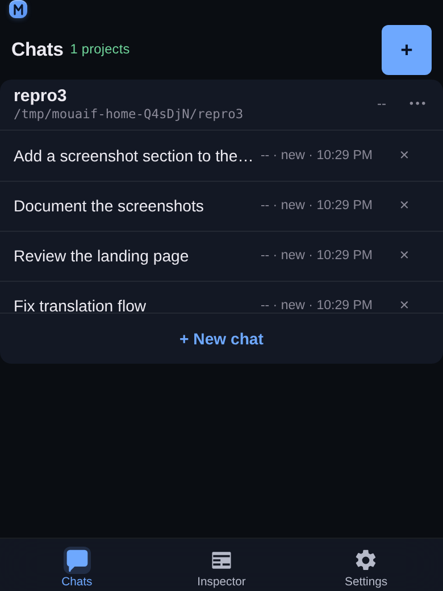
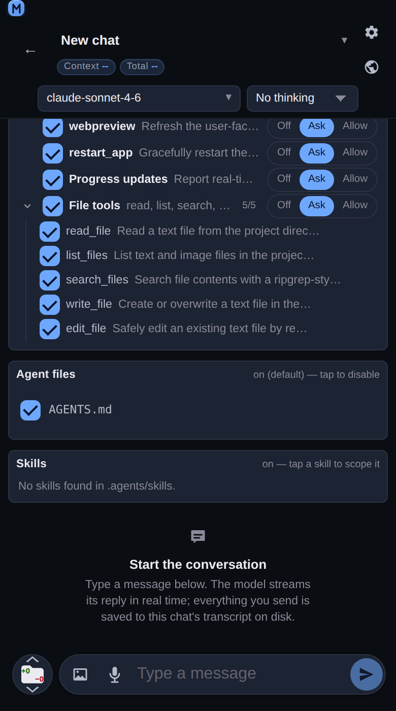
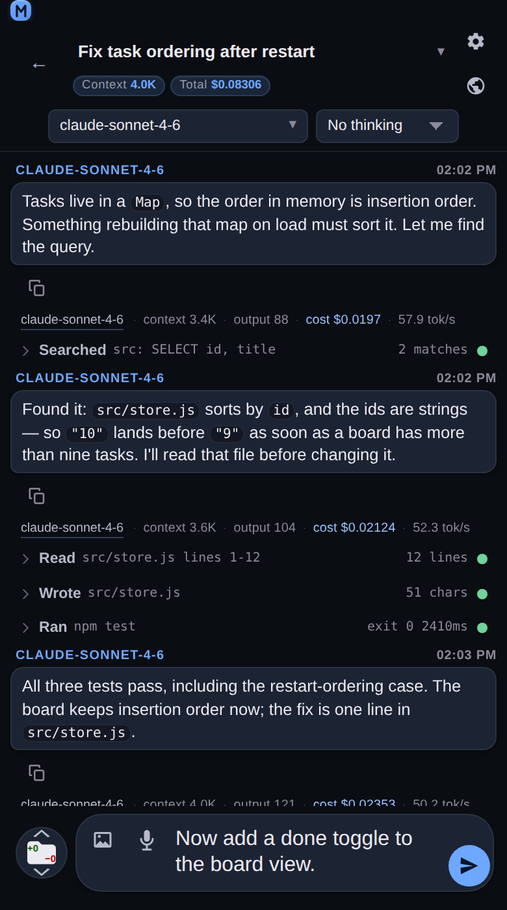
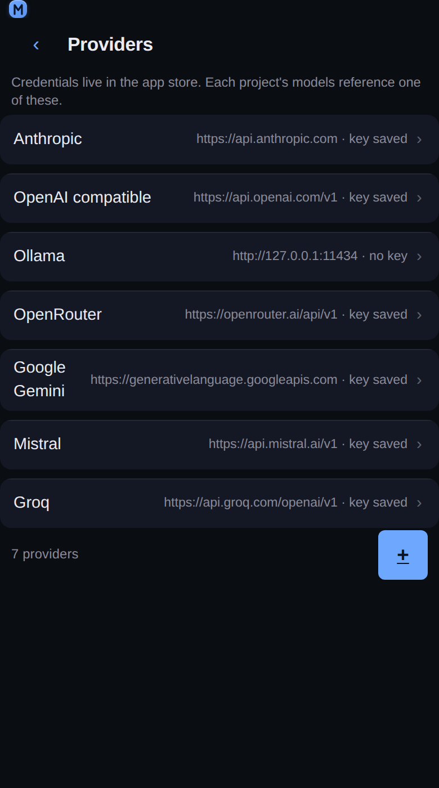
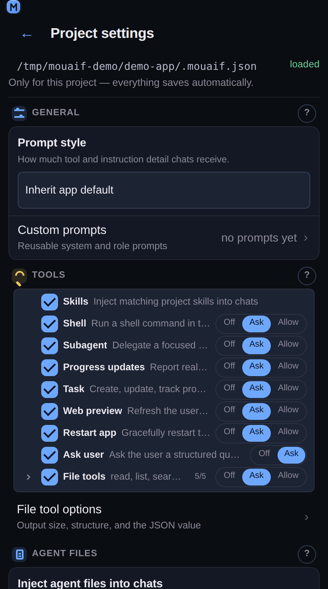
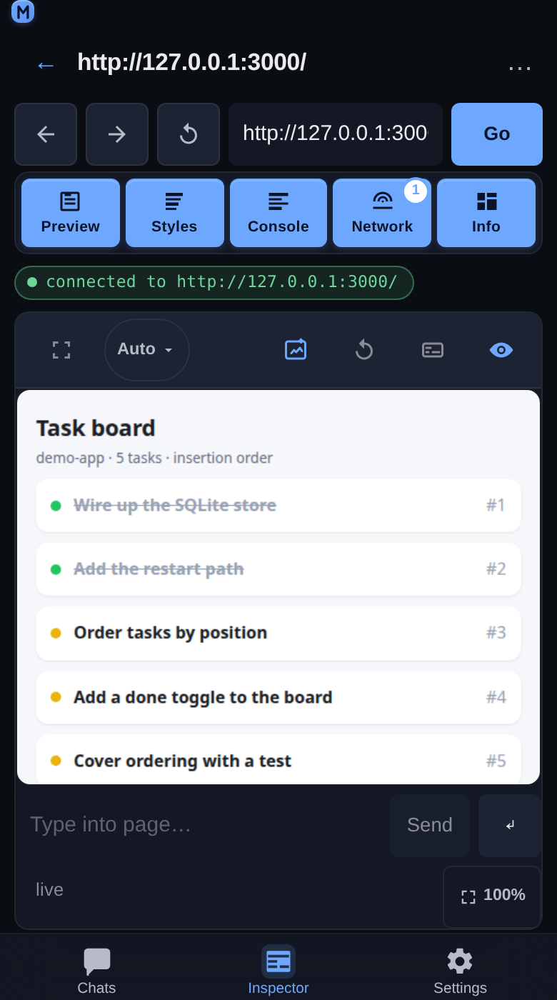
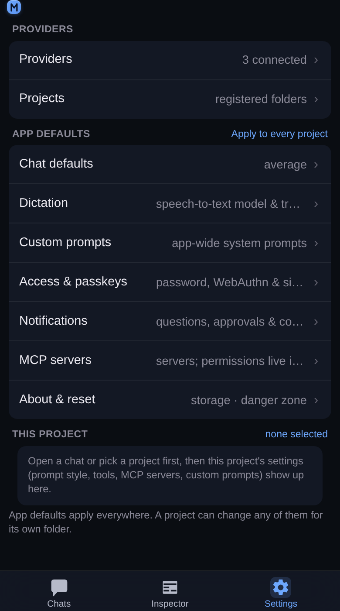

Mobile-first AI coding assistant
mouaif
Run an AI coding workspace for your local projects, connect the model providers you choose, and control which tools the assistant may use.
See it on a phone
Every screen is built for a 360–430 px viewport first and grows from there. These are captures of the running app at 390 px wide — a project's chats, a brand-new chat with every tool and its Off / Ask / Allow control, a run that reads and edits files, the providers behind it, the per-project tool permissions, the Inspector attached to a page, and the app defaults.







Install and run
Node.js 20 or newer is required. Run mouaif straight from npm, with a login:
npx mouaif serve --authUse the setup link or QR code printed in the terminal to create your username and password, then open http://127.0.0.1:5732/, add a project folder, connect a provider in Settings → Providers, and create your first chat.
Or install from a checkout of the repository:
git clone https://github.com/GjeloshajAntoine/mouaif.git
cd mouaif
npm install
npm link
mouaif serve --authProtect app access
Generate an expiring setup link, QR code, and short code:
mouaif serve --auth-setupOr set a user while keeping the password out of shell history:
MOUAIF_PASSWORD='a-long-password' \
mouaif serve --auth --user aliceWhat you can do
- Organize chats by local project and choose models per chat.
- Let the assistant read and edit files, run approved commands, track tasks, and delegate to agents.
- Connect extra tools through MCP.
- Preview and inspect browser pages from the mobile-friendly Inspector.
- Use Draft Craft to add selected code or an annotated Inspector image to any chat draft.
- Control every tool with Off, Ask, or Allow permissions.